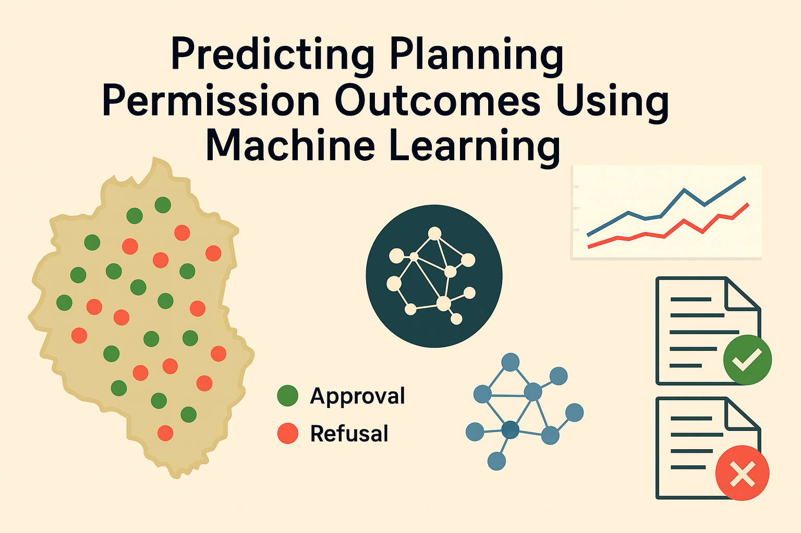
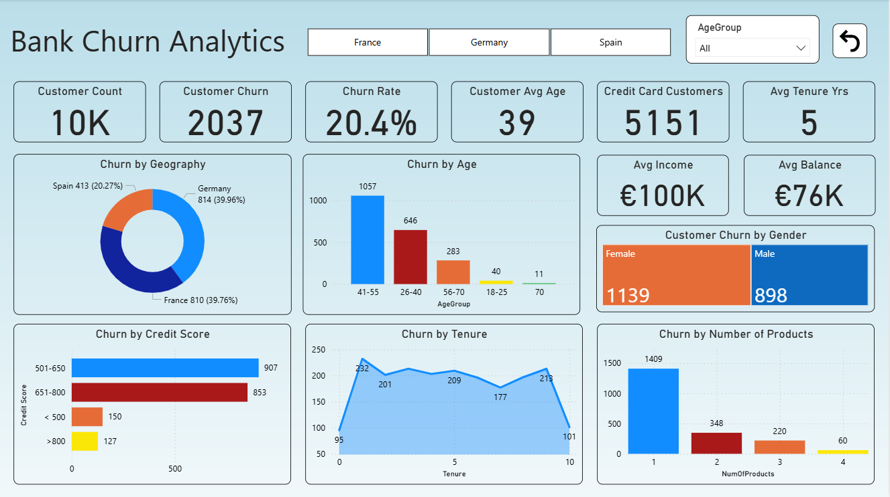
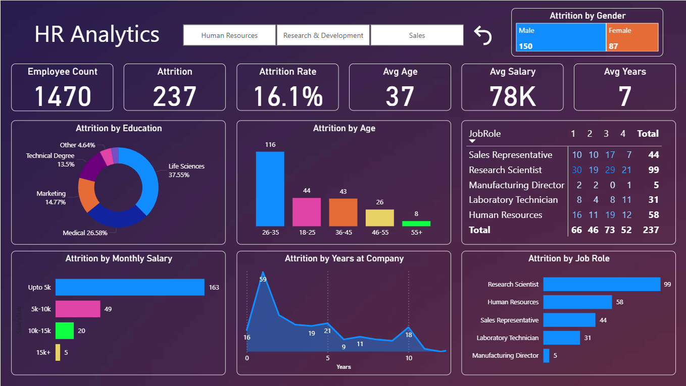
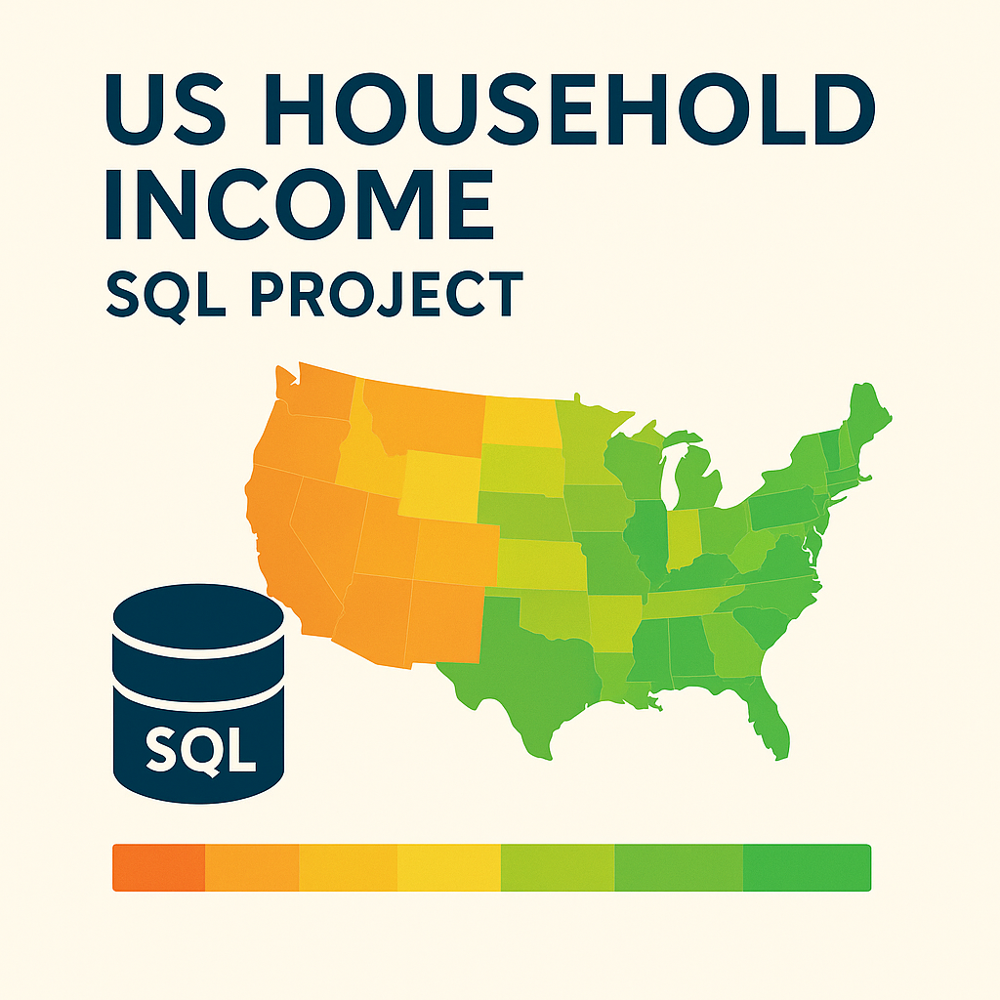
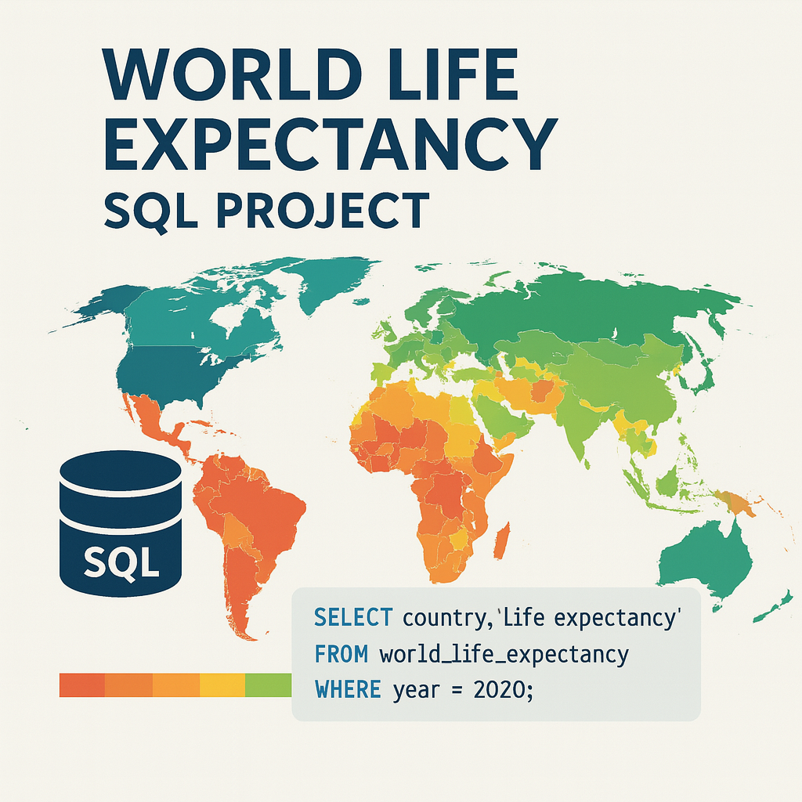

Planning Permission Machine Learning Project

This project leverages historical decision data from over 42,000 planning
applications submitted to Ashfield District Council (UK) between 1974 and
2020. The aim was to build a predictive model that could accurately
forecast whether future planning applications would be approved or
refused.
The project involved an extensive data pipeline, starting with exploratory
analysis, rigorous data cleaning, and sophisticated feature engineering.
Notably, it incorporated text clustering techniques to handle diverse
application descriptions and geocoding methods to extract meaningful
spatial insights.
Through exploratory visualisations, trends and patterns were identified,
highlighting temporal shifts and geographic influences on planning
outcomes. Baseline modelling using logistic regression and decision trees
provided initial predictive insights, achieving moderate accuracy but
identifying clear opportunities for improvement.
This project was part of my assessment to obtain the Professional Diploma
in Artificial Intelligence from Dublin Business School.
Part 1:
Exploring a suitable social problem that could benefit from machine
learning
Part 2:
Performing EDA and building Machine Learning Models on the data
Bank Churn Analytics Dashboard

Interactive dashboard analysing customer churn across France, Germany &
Spain, with KPI cards, geographic & demographic breakdowns, and trend
analyses to pinpoint high-risk segments.
Data Source:
Maven Analytics Sample Datasets
Building this dashboard was part of my IBAT Data Analytics Diploma 2025
assessment. I have included a link to view my write-up for this project
which includes a detailed explanation of how I cleaned and transformed
the data in Power Query.
Project Document:
Bank Churn Assignment

Developed an interactive Power BI dashboard that tracks headcount,
attrition totals and rates, and breaks down departures by gender, age
band, education level, salary bracket, tenure and job satisfaction
score, enabling HR teams to instantly spot high-risk groups and tailor
retention interventions.
Data Source:
Analyst Builder Power BI course
US Household Income SQL Project

Performed MySQL data cleaning on a U.S. household income dataset –
including fixing headers, removing duplicate records, standardising state
and place names, and correcting Type entries. Then conducted exploratory
analysis by joining income figures with statistical summaries, filtering
out zero-value entries, and uncovering key insights such as top-earning
states and cities, and income disparities across area types.
Data Source:
Analyst Builder MySQL for DA course
World Life Expectancy SQL Project

Performed MySQL data cleaning on a global life-expectancy dataset,
including backing up the original table, removing duplicate records, and
imputing missing status and life-expectancy values. Then conducted
exploratory analysis to surface key insights such as lifespan gains,
GDP–life expectancy correlations, development-status comparisons, and
rolling mortality trends.
Data Source:
Analyst Builder MySQL for DA course